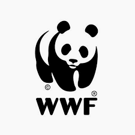

 WHAT WWF IS DOING
WWF researcher and Tubbataha ranger Choy Calagui and
other rangers measure a green turtle© Jürgen Freund / WWF-Canon Conserving
wildlife is at heart of our mission. We focus on protecting populations of
some of the world’s most ecologically, economically, and culturally
important species—the survival of which are threatened by poaching,
illegal trade and habitat loss. We use the best science available to link
on-the-ground work with high-level policy action to create lasting
solutions that benefit wild animals as well as the people that live
alongside them.
DOUBLE THE NUMBER OF TIGERS
WWF aims to double the world’s wild tiger population
by 2022 (TX2). We’re working with world leaders to take action, focusing
conservation efforts in key sites, raising funds to permanently protect
landscapes, and supporting community-based conservation. Saving tigers is
about more than restoring a single species. As a large predator, tigers
play an important role in maintaining a healthy ecosystem. Every time we
protect a tiger, we protect around 25,000 acres of forest—forests that
sustain wildlife and local communities and supply people around the world
with clean air, water, food, and products. EMPOWER PEOPLE TO PROTECT
WILDLIFE Over the last few decades, conservationists have come to
understand just how central community involvement is to wildlife
conservation success—and how important it is for communities to actively
steward the natural resources around them to improve economic and social
well-being. WWF’s community-based conservation work today reflects this
fundamental reality. We work across a variety of communities and customize
our work based on the specific needs and interests of a given place,
taking into consideration each region’s particular set of conservation
assets and challenges.
CLOSING ASIA'S IVORY MARKETS
Illegal killing of elephants for ivory decimates global populations. Estimates indicate that
each year poachers slaughter close to 20,000 elephants, mostly for their
tusks. Fueling this rampant poaching is a steady consumer demand for
ivory. Overall, we see demand increasing in East Asian and Southeast Asian
markets, with the greatest demand in China, Hong Kong, Singapore, and
Thailand. WWF is working to shut down the illegal markets in Thailand, and
helped end the legal ivory trade in China. By tackling these markets now
as part of a pan-Asian approach, WWF aims to leverage China’s recent
actions to ban the ivory trade to prevent further displacement of the
current China ivory trade to nearby countries.